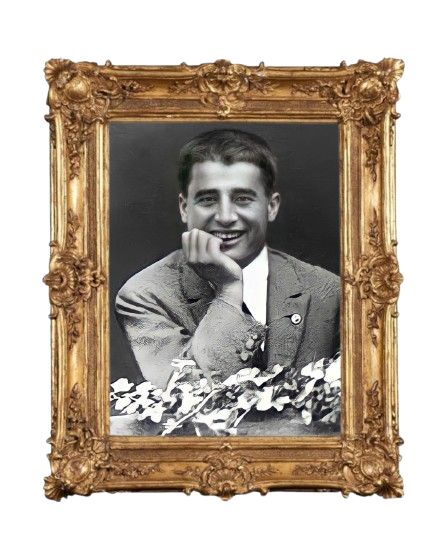
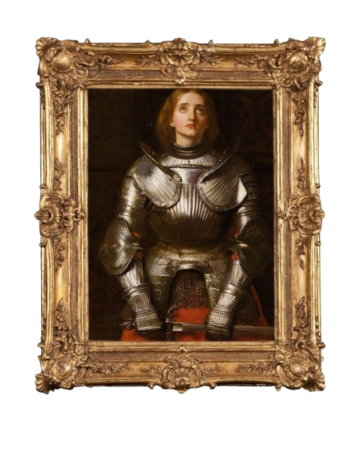

Um memorial dedicado a quem morreu nessa vida e nasceu Para a gloriosa vida eterna
Os Santos da Igreja Católica Apostólica Romana são pessoas que souberam verdadeiramente amar a Jesus Cristo, procuraram imitar em tudo as virtudes cristãs, lutaram contra a própria carne e se alcançaram o Céu.
O Espírito Santo ao levantar um Santo, manda um sinal para toda humanidade. Descubra a história de jovens que com a vida, testemunham que A Santidade é possível!
Mural da Santidade
S. Pier Giorgio Frassati
S. Joana D'Arc

S. Carlo Acutis

S. Teresinha

S. Domingos Sávio
S. Tarcísio

B. Chiara Luce

B. Sandra Sabattini